정보통신기사(구) (2005-09-04 기출문제)
1과목: 디지털 전자회로
1. 다음과 같은 diode 회로에서 전달특성은?(단, Vz는 D1과 D2의 항복전압이다.)
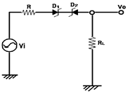
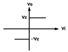
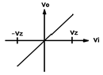
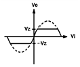
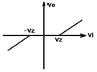
(정답률: 알수없음)

2. 아래 주어진 논리회로와 같은 논리회로는?
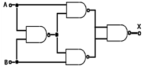
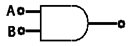
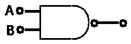
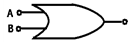
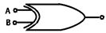
(정답률: 알수없음)
3. 아래 연산증폭기에서 V1의 전압은? (단, R1=10K, R2=10K, R3=10K Rf=10K이며 +V=+15V, -V=-15V 이다.)
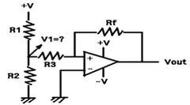
- 1.0[V]
- 2.5[V]
- 5.0[V]
- 7.5[V]
(정답률: 알수없음)
4. RC결합 CE증폭기의 저주파 응답에서 결합콘덴서의 역할에 대한 설명 중 맞는 것은?
- 결합콘덴서의 용량은 소신호에 대해 거의 단락상태가 되도록 커야 한다.
- 결합콘덴서는 입력의 직류성분만을 통과시켜야 한다.
- 입력주파수가 커짐에 따라 콘덴서의 용량도 증가하여야 한다.
- 입력주파수가 작아짐에 따라 콘덴서의 용량도 감소해야 한다.
(정답률: 알수없음)
5. 다음의 논리식을 회로로 구성하기 위해 필요한 논리 게이트의 종류와 개수를 바르게 나타낸 것은?
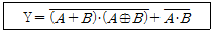
- NOR 2개, EX-OR 1개, AND 2개
- OR 2개, AND 1개, EX-OR 1개, NAND 1개
- OR 3개, AND 2개, NOT 2개
- OR 2개, EX-OR 1개, NAND 2개
(정답률: 알수없음)
6. 다단 증폭기에서 증폭도가 20 [dB]이고, 잡음지수가 4 [dB]인 전치증폭기를 잡음지수가 11 [dB]인 주증폭기에 연결하면 종합잡음지수는 몇 [dB]인가?
- 2.5
- 3.5
- 4.5
- 5.5
(정답률: 알수없음)
7. 드레인 전압이 20[V]인 접합형 FET에서 게이트 전압을 0.5[V] 변화시켰더니 드레인 전류가 2[㎃] 변화하였다. 이 FET의 상호콘덕턴스 [mΩ]는 얼마인가?
- 0.1
- 1
- 4
- 6
(정답률: 알수없음)
8. 푸쉬-풀(push-pull) 증폭회로에서 바이어스를 완전 B급으로 하지 않는 주된 이유는?
- 출력을 크게 하기 위해서
- cross over의 일그러짐을 줄이기 위해서
- 능률은 높이기 위해서
- 안정된 동작을 위해서
(정답률: 알수없음)
9. 주파수 변조(FM)에서 S/N을 개선하기 위한 방법으로 적당치 않은 것은?
- 변조지수 mf를 크게 한다.
- 신호파의 진폭을 크게 한다.
- 주파수 대역폭을 넓게 한다.
- pre-emphasis를 사용한다.
(정답률: 알수없음)
10. 다음 부울함수 중 그 결과 값이 항상 1인 것은?
- x + x
- x · x
- x + 1
- x · x
(정답률: 알수없음)
11. 그림과 같은 회로의 동작설명 중 옳지 않은 것은?
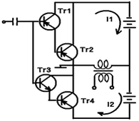
- Tr과 Tr2는 등가 pnp형 트랜지스터이다.
- 입력신호가 +이면 i1이 흐른다.
- 콤프리멘타리 다링톤 회로이다.
- 입력신호에 따라 i1과 i2가 교대로 흐른다.
(정답률: 알수없음)
12. 그림과 같은 적분기에서 아래와 같은 계단(STEP)전압을 입력시켰을 때의 출력파형은?
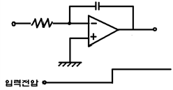
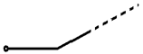
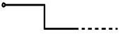
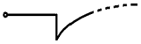
(정답률: 알수없음)
13. 다음 중 데이터 분배회로로 사용되는 것은?
- 인코더(Encoder)
- 시프트레지스터(Shift register)
- 멀티플렉서(Multiplexer)
- 디멀티플렉서(demultiplexer)
(정답률: 알수없음)
14. 다음 그림은 슈미트 트리거회로이다. 이 회로의 설명 중 틀린 것은?
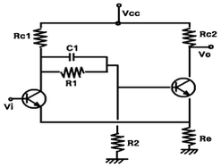
- 두개의 안정 상태를 갖는 회로이다.
- 펄스 파형을 만드는 회로로는 사용하지 못한다.
- 궤환 효과는 공통 에이터 저항을 통하여도 이루어진다.
- 입력 전압의 크기가 on, off 상태를 결정하여 준다.
(정답률: 알수없음)
15. 다음 중 디지털데이터를 신호로 변환하는데 주파수 스펙트럼의 이용효율이 가장 변 ㆍ 복조 방식은?
- FSK
- 16QAM
- ASK
- 16PSK
(정답률: 알수없음)
16. 두 개의 2진수를 더하기 위한 반가산기(HA)회로는 1개의 EX-OR와 1개의 AND 게이트로 구성된다. 그러면 자리올림이 있는 덧셈에 사용하기 위한 전가산기(FA)의 회로구성은?
- 2개의 EX-OR, 3개의 AND
- 2개의 EX-OR, 2개의 AND, 1개의 OR
- 2개의 EX-OR, 2개의 OR, 1개의 AND
- 2개의 EX-OR, 2개의 AND, 2개의 OR
(정답률: 알수없음)
17. PCM방식이 PAM방식보다 많이 사용되는 가장 큰 이유는?
- 간단한 장비의 구성
- 양자화 오차의 최소화
- 저렴한 가격
- 잡음에 강한 성능
(정답률: 알수없음)
18. 반파정류회로에서 다이오드 순방향저항 Rf = 2[Ω], RL = 1[㏀], Vi = 100V(rms)이다. 다이오드의 최대 역전압은 약 얼마인가?
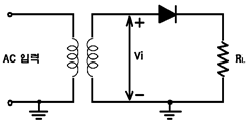
- 100[V]
- 141[V]
- 200[V]
- 50[V]
(정답률: 알수없음)
19. 다음 회로에서 트렌지스터의 콜렉터 에미터간 포화전압을 0[V]라 할 때 ① A=B=C=0 인 때와 ② A=B=C=5[V]일 때의 출력은?
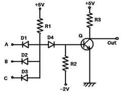
- ①0[V], ②0[V]
- ①0[V], ②5[V]
- ①5[V], ②0[V]
- ①5[V], ②5[V]
(정답률: 알수없음)
20. 14핀 TTL IC에서 2개의 단자는 +전원과 접지로 사용된다. 그러면 이 14핀 IC에 넣을 수 있는 인버터의 개수는 최대 몇 개인가?
- 3개
- 4개
- 5개
- 6개
(정답률: 알수없음)
2과목: 정보통신 시스템
21. 광통신을 위한 디지털 전송 시스템에서 중계구간의 중계거리를 산출하고자 한다. 다음 중 중계구간 산출식에 포함되지 않는 것은?
- 송출파워
- 선로손실
- 증폭기 이득
- 시스템 마진
(정답률: 알수없음)
22. 표본화주기가 125[㎲]인 24회선용 PCM 통신방식에서 각 채널의 디지트가 음성용 7비트, 신호용 1비트이고, 프레임 동기용 디지트가 1비트일 때 전송속도는?
- 1544[㎑]
- 2048[㎑]
- 3825[㎑]
- 4250[㎑]
(정답률: 알수없음)
23. 지능망 구성 요소 중 SCP와 SSP사이의 정보를 전달하는데 사용되는 프로토콜은 어떤 것인가?
- No.7 공통선 신호방식
- X.25
- TPC
- R.2
(정답률: 알수없음)
24. 다음 중 E1 디지털 전송링크의 전송속도는?
- 1.544 [Mbps]
- 2.048 [Mbps]
- 34.368 [Mbps]
- 44.736 [Mbps]
(정답률: 알수없음)
25. 암호를 이용하는 데이터통신의 목적이라고 볼 수 없는 것은?
- 누화의 방지
- 프라이버시(privacy)보호
- 신뢰성 확보
- 시큐리티(security)
(정답률: 알수없음)
26. 2진수의 경우 사건의 발생확률을 P, 사건발생에 따른 정보량을 i라고 할 때 정보량 i를 표현하는 식은?
- I= log2 (1/P)
- I= log2 P
- I= log2 P2
- I= log2 (1/P2)
(정답률: 알수없음)
27. 비동기식 통신서비스에서 서비스품질(QOS) 파라메타가 아닌 것은?
- 에러율
- 융통성
- 신뢰성
- 전송속도
(정답률: 알수없음)
28. 정보통신망에서 이용(user)과 망(network) 인터페이스간 여러 가지 접속조건이 있다. DTE와 DCE를 접속할 때의 컨넥터의 형상, 핀수, 핀 배열 등을 정하고 있는 조건은?
- 물리적 조건
- 전기적 조건
- 논리적 조건
- 교환적 조건
(정답률: 알수없음)
29. Shannon의 공식에서 통신용량 C = Blog2 (1+S/N) 으로 나타낸다. 이 식의 설명 중 틀린 것은?
- 통신용량은 대역폭 B에 비례한다.
- 통신용량은 S/N 비가 높을수록 많아진다.
- 동일한 용량일 때 S/N비가 높으면 대역폭 B가 좁아도 된다.
- 대역폭과 S/N 비는 통신용량과 무관하다.
(정답률: 알수없음)
30. HDLC의 전송제어에서 제어필드로 구분하는 프레임구성을 세 가지로 분류한다. 이프레임의 종류가 아닌 것은?
- 번호프레임
- 비번호프레임
- 정보프레임
- 감시프레임
(정답률: 알수없음)
31. 아날로그 전송방식에 있어서 중계장치가 갖추어야 할 일반적인 기능이 아닌 것은?
- 증폭기능
- 등화기능
- 자동이득조정기능
- 압신기능
(정답률: 알수없음)
32. 광대역 ISDN의 교환 및 다중기술로서 개발되고 있는 교환기술은?
- APMBS
- ATM
- PABX
- X.31
(정답률: 알수없음)
33. PAD(Packet Assembly/Disassembly)기능에 관한 ITU-T 권고안 중에서 PAD의 변수와 기능들에 관한 표준은?
- X.3
- X.25
- X.28
- X.29
(정답률: 알수없음)
34. 이동 통신에서 적용되는 무선 다원 접속방식 중 국내에서 운용되고 있는 PCS의 방식은?
- PDMA
- TDMA
- CDMA
- FDMA
(정답률: 알수없음)
35. OSI 7계층 중 응용 프로토콜에서 고도의 정보 표현형식에 관한 기능을 나타낸 계층은?
- 응용 계층
- 전송 계층
- 세션 계층
- 표현 계층
(정답률: 알수없음)
36. 통신망 운용에 대한 설명 중 적합하지 않은 것은?
- 통신망설비의 효율적인 운용을 위한 시험, 감시, 제어 및 수리를 포함한다.
- 안정적이고, 양호한 서비스를 제공하기 위하여 망설비 계획, 설계, 건설 및 관리 등을 포함한다.
- 통신망의 대규모화, 국제 광역화 및 사설망의 발달에 따라 통신망 운용의 필요성이 증대되고 있다.
- 서비스의 복합화 등으로 고도화 기능의 필요에 따라 분산화된 통신망 운용의 필요성이 증대되고 있다.
(정답률: 알수없음)
37. ISDN 서비스 기능 중에서 국제표준화기구에서 권고하는 하위 3계층까지만 지원하는 것은?
- bearer-service
- high layer
- tele-service
- telecommunication service
(정답률: 알수없음)
38. 데이터 회선교환방식에 대한 설명 중 옳은 것은?
- 통신경로가 물리적으로 통신종료시까지 구성된다.
- 전송대역폭 사용이 매우 융통적이다.
- 일반적으로 전송속도 및 코드변환이 가능하다.
- 소량의 간헐적인 통신에 매우 효율적이다.
(정답률: 50%)
39. 통신망의 구성에서 교환국수가 10개국일 때 망형(mesh type)으로 구성시 중계회선의 경로수는?
- 9
- 45
- 56
- 68
(정답률: 알수없음)
40. 계층간의 통신에 대한 모델에서 네트워크의 다른 지역에 있는 대등 실체에게 보내지는 정보로 그 실체에게 어떤 서비스 기능을 수행하도록 지시하는 것으로 프로토콜 제어정보를 의미하는 것은?
- SDU
- IDU
- PCI
- ICI
(정답률: 알수없음)
3과목: 정보통신 기기
41. 현재 주로 은행 등 금융관계의 방범용시스템, 전철역용 시스템, 교통상황 감시 시스템 등에 사용되고 있는 것은?
- CATV
- CCTV
- HDTV
- VRS
(정답률: 알수없음)
42. AM송신기의 구성에서 완충증폭기의 위치가 적합한 곳은?
- 발진부와 체배부 사이
- 체배부와 증폭부 사이
- 증폭부와 변조부 앞
- 여진증폭부 다음
(정답률: 알수없음)
43. 컴퓨터시스템의 광저장 고속네트웍기술로 수많은 서버에서 사용되지 않은 데이터를 끄집어 내어 다른 서버에서 활용함으로써 시스템의 효율을 높이고 비용을 절감할 수 있는 것은?
- DBMS
- SAN
- SHV
- HTTP
(정답률: 알수없음)
44. 다음 중 텔레텍스트(teletext)의 특징이 아닌 것은?
- 쌍방향의 방송방식이다.
- 다수의 사용자가 동시접속 가능하다.
- 다양한 정보제공이 가능하다.
- 정보제공자와 운영주체가 동일하다.
(정답률: 알수없음)
45. DSU에 대한 설명 중 잘못된 것은?
- DSU는 Digital Service Unit의 약어이다.
- 디지털 형태의 데이터전송을 위해서 필요하다.
- DSU는 직렬유니폴라신호를 변형된 바이폴라신호로 바꿔준다.
- 모뎀이 송수신단에 필요하다.
(정답률: 알수없음)
46. 호스트 컴퓨터와 변복조기 사이에 설치되어 여러대의 터미널이 하나의 공통포트를 이용하도록 해주는 장비는?
- 포트공동이용기
- 포트선택기
- RS-232-C
- RS-449-A
(정답률: 알수없음)
47. 교환회선 전송제어장치는 입출력 제어부, 회선 제어부, 회선 접속부로 구성된다. 다음 중 회선 접속부의 기능은?
- 오류 검출 부호 생성
- 송수신 데이터 기억
- 전송 데이터 기억
- 변복조 인터페이스 제어
(정답률: 알수없음)
48. ATM과 비교하여 동기식 전달 모드(STM)의 특징이 아닌 것은?
- 다양한 속도 제공은 제한되어 있다.
- 통합의 정도는 모든 망이 통합되어 있다.
- 정보전송의 지연은 일정하다.
- 분배서비스의 정합도는 일정하다.
(정답률: 알수없음)
49. 집중화기와 비교하여 다중화의 장비를 설명한 것 중 틀린 것은?
- 선로의 정적인 공동 이용
- 실제 전송할 데이터가 있는 단말에게 만 시간폭 할애
- 몇 개의 기기가 컴퓨터를 동시에 이용할 수 있게 하는 것을 의미
- 저속도 측의 부채널 속도 A, B, C, D의 합은 고속 링크측 채널속도 E와 일치한다.
(정답률: 47%)
50. 손으로 쓴 정보를 입력할 수 있는 휴대형 컴퓨터 일종으로 전자 수첩처럼 개인 정보 관리나 일정 관리 기능을 갖춘 한편, 컴퓨터와의 정보 교류, 팩스 송수신 등의 무선 통신기능을 수행하는 휴대용 단말기는?
- CT2
- ISDN
- PHS
- PDA
(정답률: 70%)
51. 교환기의 가입자 회로에는 7종류(B, O, R, S, C, H, T)의 기능이 있는데 잘못 설명한 것은?
- B : 통화에 필요한 교류전류를 가입자선에 공급한다.
- R : 가입자에게 착신을 알리기 위해서 호출신호를 가입자선에 송출한다.
- S : 가입자선에 흐르는 직류 전류 루프의 온/오프 상태를 감시함으로써 가입자 전화기의 상태를 검출한다.
- T : 가입자선을 시험 회로에 접속한다.
(정답률: 알수없음)
52. ISDN 접속 기능이 없는 단말기를 위해 ISDN 기능을 제공하는 장치는?
- TA
- TE 1
- NT
- LE
(정답률: 30%)
53. 다음 중 광대역의 마이크로파 통신에서 송신출력증폭에 가장 많이 사용되는 대전력증폭관은?
- 클라이스트론
- 마그네트론
- 자전관
- 진행파관
(정답률: 알수없음)
54. 공중 통신망을 이용하여 메시지의 생성, 축적의 전송 및 처리의 전 과정에 각종 메시지 통신 처리 서비스는?
- EDI
- MHS
- LAN
- ISDN
(정답률: 알수없음)
55. 아날로그를 디지털로 바꾸고 디지털을 아날로그로 바꾸는데 가장 자주 이용되는 기술이 PCM이다. 다음 중 PCM의 기본적인 기능이라고 볼 수 없는 것은?
- 아날로그신호의 샘플링
- 아날로그신호의 증폭
- 샘플된 진폭의 양자화
- 양자화된 아날로그 샘플로 디지털신호로 나타내기위한 부호화
(정답률: 알수없음)
56. 데이터 통신 단말장치의 주요 기능이 아닌 것은?
- 데이터 입출력 기능
- 데이터전송로 교환기능
- 전송제어기능
- 데이터 버퍼링 기능
(정답률: 40%)
57. 다음 중 무선 수신기의 성능을 표시하는 것이 아닌 것은?
- 선택도
- 안정도
- 증폭도
- 충실도
(정답률: 알수없음)
58. 다음 중 부가가치 통신망이 제공하는 통신처리 기능으로 가장 타당한 것은?
- 각종 연산처리, DB갱신 및 검색
- 속도, 프로토콜, 미디어 변환
- 통신망의 관리 및 운용
- 교환 및 다중화기능
(정답률: 알수없음)
59. 이동 통신 시스템의 주요 기능 중 해당 되지 않는 것은?
- 위치 등록(Location Registration )
- 최적의 존( Cell ) 구역화
- 통화 채널 전환 ( Hand off )
- 소 구역 기법 (Small Cell Technique)
(정답률: 알수없음)
60. 현행 TV방식과 HDTV방식에 대한 설명 중 틀린 것은?
- 현행 TV의 화면 종횡(세로:가로)비는 3:4이고, HDTV의 화면 종횡비는 9:16이다.
- 영상 및 음성 신호의 처리를 위한 회로는 현행 TV보다 HDTV가 복잡하다.
- 프레임당 수사선 수는 HDTV가 현행 TV보다 대략 2배정도 많다.
- 현행 TV의 주사방식은 순차주사이고, HDTV는 비월주사이다.
(정답률: 알수없음)
4과목: 정보전송 공학
61. 베이스밴드전송의 부호펄스에서 디지털 비트 구간의 절반(1/2)지점에서 값에 따라 신호의 위상이 변화하는 부호는?
- 바이폴라
- AMI
- NRZ
- 맨체스터
(정답률: 알수없음)
62. 디지털 변조방식은 어떤 변조방식을 사용하는가에 따라 전송과정에서 오류가 발생할 확률이 달라지게 된다. 같은 진수를 사용할 경우 오류발생확률이 순서대로 표시된 것은?
- QAM ＜ FSK ＜ DPSK ＜ ASK
- DPSK ＜ FSK ＜ QAM ＜ ASK
- QAM ＜ DPSK ＜ FSK ＜ ASK
- FSK ＜ QAM ＜ DPSK ＜ ASK
(정답률: 알수없음)
63. 마이크로파 통신에서 전파의 감쇠특성 때문에 주파수에 따라 중계간격이 다르게 설계되는데 중계거리로 가장 합당한 것은?
- 10 ㎓ 이하에서 중계간격은 100 ㎞ 정도
- 10 ㎓ 이하에서 중계간격은 50 ㎞ 정도
- 20 ㎓ 이하에서 중계간격은 20 ㎞ 정도
- 30 ㎓ 이하에서 중계간격은 10 ㎞ 정도
(정답률: 알수없음)
64. 전송제어 절차의 순서가 맞는 것은?
- 회선접속-링크설정-정보전송-링크해제-회선해제
- 회선접속-정보전송-링크설정-링크해제-회선해제
- 링크설정-회선접속-정보전송-링크해제-회선해제
- 회선접속-링크설정-정보전송-회선해제-링크해제
(정답률: 알수없음)
65. 다음 중 HDLC의 프레임구조를 올바르게 나타낸 것은?
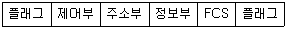
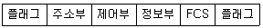
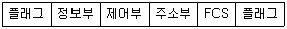
(정답률: 알수없음)
66. 광섬유 특성의 설명 중 옳은 것은?
- 재료분산 - 광섬유 굴절율이 달라서 전파하는 광의 파형에 영향을 주어 파형이 넓게 되어 발생
- 구조분산 - 파장의 폭을 갖는 광펄스를 입사시키면 전파루트가 달라져 도달시간의 차가 발생
- 흡수손실 - 광섬유 주성분의 불순물 첨가에 의하여 빛의 파장에 영향
- 산란손실 - 빛이 아주 작은 물체 즉 분자에 부딪히면 사방으로 빛이 퍼쳐 손실을 발생
(정답률: 알수없음)
67. 디지탈 입력 신호 펄스열을 그대로 또는 다른 형태의 펄스파형으로 변화하여 전송하는 방식은?
- 광대역(broad band) 전송 방식
- QAM 방식
- 반송대역 전송 방식
- 베이스 밴드 전송 방식
(정답률: 알수없음)
68. 동축 케이블의 장점이 아닌 것은?
- 케이블(cable)간의 혼신이 적다.
- 주파수가 증가할수록 누화특성이 개선된다.
- 애코 억제기와 함께 사용한다.
- 많은 음성 신호를 한번에 전송할 수 있다.
(정답률: 알수없음)
69. 주로 단말기 데이터통신에서 사용되는 동기식 전송방식의 특징이 아닌 것은?
- 송신측과 수신측은 동기되어 있으므로 동기문자 또는 특수 비트열의 사용이 필요하지 않다.
- 비동기(START-STOP)방식보다 전송속도가 높다.
- 전송되는 글자들 사이에는 휴지시간을 두지 않는다.
- 송 ㆍ 수신측 모두 버퍼기억장치를 가지고 있어야 한다.
(정답률: 알수없음)
70. 캐릭터를 부호화 할 때에 1의 비트수가 어느 일정한 개수가 되도록 결정하고 수신측에서 1을 체크하여 미리 결정한 개수와 비교함으로서 에러를 검출하는 방식은?
- 수평패리티 체크방식
- 수직패리티 체크방식
- CRC방식
- 일정마크 체크방식
(정답률: 알수없음)
71. 복원중 (문제오류로 인해 복원중입니다. 정확한 내용을 아시는 분께서는 오류신고를 통하여 내용 작성 부탁드립니다. 정답은 4번입니다.)
- 복원중
- 복원중
- 복원중
- 복원중
(정답률: 알수없음)
72. QAM(직교 진폭변조)방식에 관한 설명 중 틀린 것은?
- M진 QAM신호의 대역폭 효율은 log2M이다.
- M진 QAM방식이 M진 PSK보다 오류 확률면에서 우수하다.
- QAM신호는 2개의 직교성 신호를 합성한 것이다.
- QAM은 동일한 수의 신호 레벨을 갖는 PSK보다 대역폭효율이 4배 우수하다.
(정답률: 알수없음)
73. 바이폴라 부호의 특징에 해당되지 않는 것은?
- 0은 0레벨의 펄스로, 1은 +4,-4의 두 가지 레벨의 펄스로 교대로 변화시키는 방법이다.
- 이 부호는 3원부호로 보이지만 전송할 수 있는 정보량은 2원부호와 동등하다.
- 직류성분이 포함되는 단점이 있다.
- 0부호의 연속을 억압하는 기능이 없어 수신단에서 타이밍(timing) 추출에 어려움이 있다.
(정답률: 알수없음)
74. 해밍부호(Hamming Code)란 몇 개의 오류(error)를 정정할 수 있는 이원순회 부호인가?
- 4
- 3
- 2
- 1
(정답률: 알수없음)
75. 데이터 통신의 에러제어 방식의 종류가 아닌 것은?
- 루프 또는 반항에 의한 검사
- 에러검출 후 재 전송
- 신호레벨 정정
- 전진에러 수정
(정답률: 알수없음)
76. 다음 중 광케이블을 통해 정보전송이 가능한 것은 빛의 어떤 성질 때문인가?
- 굴절
- 산란
- 회절
- 전반사
(정답률: 알수없음)
77. 다음 중 비트방식 프로토콜(bit-oriented protocol)에 해당되지 않는 것은?
- BASIC
- HDLC
- ADCCP
- BOLD
(정답률: 알수없음)
78. MODEM에서 시간 길이 T = 833 × 10-6[sec]의 단위펄스가 4개의 독립적인 변조파를 갖는 4위상 변복조방식에 의하여 표시될 때에 전송되는 비트수를 나타내는 데이터 신호속도는?
- 1200bps
- 2400bps
- 4800bps
- 9600bps
(정답률: 알수없음)
79. DM에서 사용되는 표본화 주파수를 2배 증가시키면 S/Nq비(신호전력대 양자화잡음전력의 비)는 몇[dB]증가하는가? (단, LPF의 차단주파수와 전송하려는 아날로그 신호가 가지는 최고주파수는 일정하다.)
- 6[dB]
- 9[dB]
- 12[dB]
- 15[dB]
(정답률: 0%)
80. 플라스틱 광섬유 케이블의 설명으로 맞는 것은?
- 전송특성이 우수하기 때문에 주로 공중통신에 사용
- 전송손실이 가장 작기 때문에 장거리통신에 주로 사용된다.
- 광섬유 케이블 중 중계기가 불필요하여 무 중계 거리가 가장 길다.
- 경제성과 취급의 용이성 때문에 단거리 통신이나 자동차의 배선 등에 사용 된다.
(정답률: 알수없음)
5과목: 전자계산기일반 및 정보통신설비기준
81. 다음 2진수의 2개의 데이터를 AND 연산한 후의 결과는?
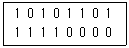
- 11111101
- 10100000
- 10100001
- 01011111
(정답률: 알수없음)
82. 프로그래머가 프로그램에서 기억하기 쉬운 적당한 명칭을 붙여 사용하는 번지?
- 기준 번지
- 기호 번지
- 절대 번지
- 상대 번지
(정답률: 알수없음)
83. 다음 중 전자 시스템에서 보수(complement)를 사용하는 이유로 가장 타당한 것은?
- 감산을 보수 가산 방법으로 처리하기 위해
- 불필요한 제산과 감산 과정을 제외시키기 위해
- 승산 연산 과정을 간단화하기 위해
- 정확한 가산 결과를 얻기 위해
(정답률: 알수없음)
84. 마이크로 프로세서에 의해 실행될 다음 명령의 주소를 지시하며, 일종의 프로그램 카운터의 기능을 하는 것은?
- IP(Instruction Point)
- BP(Base Point)
- SP(Stack Point)
- DI(Destination Index)
(정답률: 알수없음)
85. 컴퓨터의 CPU가 명령을 수행하기 위하여 명령어를 기억장치에서 꺼내오는 일과 관계 깊은 사이클의 명칭은?
- Operation Cycle
- Instruction Cycle
- Fetch Cycle
- Direct Cycle
(정답률: 알수없음)
86. 다음 중 운영체제의 처리 프로그램이 아닌 것은?
- 파일관리 프로그램
- 언어 번역 프로그램
- 응용 프로그램
- 서비스 프로그램
(정답률: 알수없음)
87. 8비트의 자료 11011001에 대하여 시프트(left shift)논리연산을 1비트씩 2번 했을 때와 좌 로테이트(left rotate) 논리연산을 2번 했을 때의 결과값은 각각 어떻게 되나?
- 11011001, 11011001
- 01100100, 01110110
- 01100100, 01100111
- 01100100, 01100100
(정답률: 알수없음)
88. 산술연산 결과값이 오버플로가 일어났을 때 제어의 흐름이 계속되지 않고 고정된 기억위치로 스위치되어 오버플로에 대한 적절한 처리를 하도록 하는 것은?
- 서브루틴(subroutine)
- 분기(branch)
- 인터럽트(interrupt)
- 트랩(trap)
(정답률: 알수없음)
89. 컴퓨터와 메모리 크기 단위 중에서 가장 큰 것은?
- KB
- MB
- GB
- TB
(정답률: 알수없음)
90. 다음 중 메모리 셀의 주소에 의해서가 아니라 기억된 내용에 의해서 엑세스하는 기억장치는?
- 캐시메모리(cache memory)
- 연관메모리(associative memory)
- 세그멘트메모리(segment memory)
- 가상메모리(virtual memory)
(정답률: 알수없음)
91. 통신회선의 평형도의 단위는?
- [%]
- [dBm]
- [dB]
- [mV]
(정답률: 알수없음)
92. 정보통신공사업의 등록기준에 관계가 없는 것은?
- 종업원수
- 기술능력
- 자본금
- 기타 필요한 사항
(정답률: 알수없음)
93. 정보통신부장관이 전기통신설비 등을 통합운영하게 하고자하는 경우에는 전기통신설비통합운영계확을 수립하여 관계행정기관의 장과 협의한 후 국무회의의 심의를 거쳐 누구에게 승인을 얻어야 하는가?
- 국회
- 정보통신부장관
- 대통령
- 통신자문회의
(정답률: 알수없음)
94. 전기통신망에 접속되는 단말기기 및 부속설비를 무엇이라고 하는가?
- 정보통신설비
- 단말장치
- 전송설비
- 전기통신기기
(정답률: 알수없음)
95. 다음 중 비트오율의 정의는?
- 수신된 비트 수에 대한 잘못 수신된 비트 수의 비율을 말한다.
- 송신한 비트 수에 대한 잘못 수신된 비트 수의 비율을 말한다.
- 송신한 비트 수와 수신된 비트 수를 합한 비트 수에 대한 수신된 비트 수의 비율을 말한다.
- 송신한 비트 수와 수신된 비트 수의 차이다.
(정답률: 알수없음)
96. 전화망의 음량손실에 적용되는 객관적 척도는?
- 평형도
- 음량정격
- 음압레벨
- 전송당량
(정답률: 알수없음)
97. 통신사업자가 신고한 이용약관을 인가시 규정한 기준에 적합하여야 한다. 다음 중 적합하지 않은 사항은?
- 통신역무의 요금이 적정하고 공정 타당할 것
- 중요통신의 확보 사항이 적절하게 배려되어 있을 것
- 특정인에게는 적절한 차별 취급이 배려되어 있을 것
- 이용자의 통신회선설비 이용형태를 부당하게 제한하지 아니할 것
(정답률: 알수없음)
98. 수급한 공사를 하도급하고자 할 때 일괄하도급은 할 수 없도록 규정하고 있다. 이 경우 일괄 하도급이란?
- 공사의 전부를 10인 이상에게만 일괄하여 하도급 시키는 것을 말한다.
- 공사의 2분1에 해당하는 부분만을 일괄하여 하도급 시키는 것을 말한다.
- 공사의 전부를 수급인이 제3자에게 일괄하여 하도급 기키는 것을 말한다.
- 공사의 일부분이라도 1인에게만 그 부분의 공사를 하도급시키는 것을 말한다.
(정답률: 알수없음)
99. 전기통신기자제의 형식승인을 얻은 사항에 대해서 변경하고자 할 때는 누구에게 신고를 하여야 하는가?
- 전파연구소장
- 한국정보통신기술협회장
- 정보통신부장관
- 한국전자통신연구원장
(정답률: 알수없음)
100. 다음 중 기술지도의 대상자에 대하여 정보통신부장관이 행하는 기술지도의 방법이 아닌 것은?
- 정보통신기자재의 품질개선
- 기술정보의 제공
- 기술훈련 및 해외기술 협력의 지원
- 기술전수
(정답률: 알수없음)